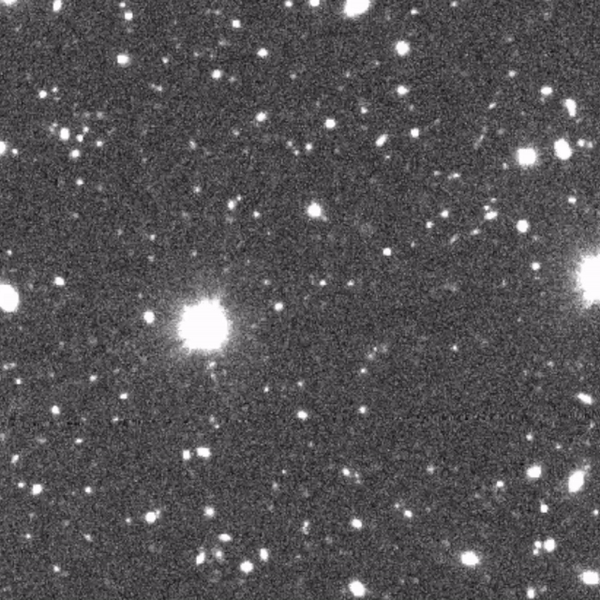
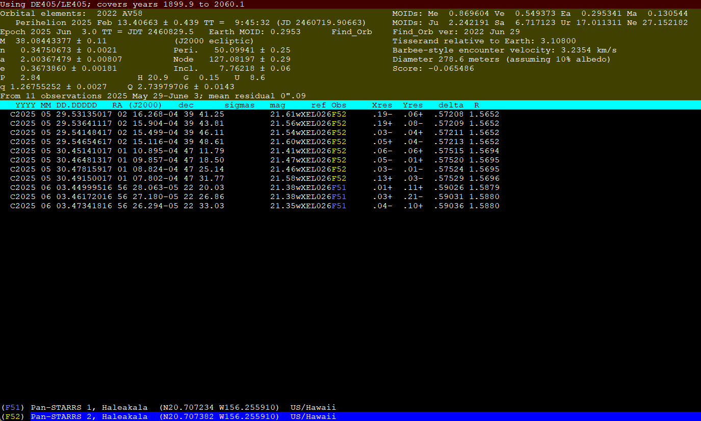

Here, I will give the clueless but sophisticated amateur an introduction to minor planet astronomy. However I must handwave most technical details as they are already better described in other websites, papers, textbooks and would make this page a few kilometers long in scroll wheel length. As we move on, you will notice I'm more knowledgable in certain sub-fields (and have done enough professional contribution to back most of my words) compared to others, so if this page gets you interested in anything, please do further reading.
Minor planets are those objects which orbit the Sun but are not as gravitationally influential as any of the 8 (true/major) planets are, and do NOT orbit other planets (because those would be "natural satellites" (sometimes called "moons")) and are not comets (because those would be "comets"). This leaves our definition of "minor planets" with the following objects: asteroids, centaurs, trans-neptunian objects, dwarf planets (yes, Pluto included)... That said, I might sometimes use "minor planet astronomy" as an umbrella term for comets and natural satellites too, because they are quite related to minor planets and it's really bothersome to make a new page for each one. The definitions can be quite confusing. See the very helpful (no sarcasm) chart below.

OK, done? You got your terms straight? No? Good, let's move on.
Minor planet astronomy involves discovering the said objects, refining our knowledge on their orbits, investigating their physical characteristics and material compositions and so on. This might sound boring to some, but minor planet astronomy is special as it is one of the areas of astronomy that is so directly influential for the daily lives of non-astronomer folks down on planet Earth - some of those objects make close approaches to Earth and can carry enough material to make beautiful light shows, blow out windows and trigger auto alarms via airbursts, flatten cities and landscapes or outright become an existential crisis for the only planet we know with certainty that harbors life in the universe! (It's a risk matrix; large astroids don't commonly come too close to Earth (proabability), but a strike by one has so much destructive potential (consequence) that we can't EVER allow for that to happen.) PLUS! The human civilization might in not-so-far future start utilizing minor planets as mining fields, interplanetary travel stops or even habitats!
Minor planet astronomy is also special in the way that it's one of the most "intuitive" and amateur-friendly professional areas of astronomy. Mainly due to the importance of watching Near-Earth objects, we have lots of observatories and surveys constantly scanning the night sky for these objects. We are producing so much raw data that it takes a really significant effort to process and "squeeze the science out of" all that data. That's the reason why observatories invest so much in computing power, machine learning tools and citizen science. PLUS! There are simply too many objects out there!
Enter amateur astronomers. A lot of observatories share the data they gather in public archives, sometimes right away, sometimes via the occassionaly data releases. Or sometimes when they are done preparing their papers. Anyway, that data is a treasure for amateurs who wish to do professional work. In the past, amateurs could also use their own equipment to discover objects (I think I heard of one guy who discovered like 400 asteroids with their telescope) but nowadays with so many extremely capable professional observatories, that window is practically closed. (But you may STILL very infrequently hear of some discoveries nonetheless.) So what happens is that we amateurs download those observatory images and look for minor planets ourselves.
The orbital data (and some physical data) on minor planets are all collected and bookkept by the International Astronomical Union's (IAU) Minor Planet Center (MPC). You can think of it as the single main official body for minor planets, comets and natural satellites. Of course there are many other organizations like the Jet Propulsion Laboratory's (JPL) Small Body Database (SBDB) which also keep their own data, but MPC is the main one which astronomers generally deal with. Now, MPC accepts a few sorts of data or data-processing contributions from professional or capable amateur astronomers who are willing to be diligent: measurements and identifications.
The minor planet discovery and tracking process happens in a few stages: observation, measurement, identification. The "observation" is the actual act of taking images with your telescope. This is most commonly done as optical or near-optical observations, but radar observations are also accepted (which is mostly suitable for NEOs). This process also defines the "observer" folks in MPC's publications. The "measurement" stage refers to the astrometric measurements of minor planets found in the sets of images obtained by the telescopes. What this means is that one finds the minor planets transiting the field-of-view of the telescope image, precisely calculates and records the time and sky position (RA/DEC) of the minor planet at the given time, and the magnitude of the object. The folks who do this are acknowledged as "measurers" in MPC's publications. Amateurs who use public data to report measurements to MPC fall in this category.
The "identification" segment is mostly handled automatically by the MPC, and it refers to finding out the relationships between the reported measurements (it is also the case that most measurement reporters will also report to what object a measurement belongs to, saving MPC from some major workload). Most of the new measurements are going to be those of already-known objects, but some measurements might belong to newer (undiscovered) objects. This involves orbit determination and fitting, ephermeris generation and several other computational steps. If a measurement is not immediately identified with a known minor planet, it is appended to the MPC's "Isolated Tracklet File (ITF)". Another thing an amateur can do (if they have the appropriate physics and computation knowledge) is taking those measurements and identifying them with previously known objects or "proposing" the creation of a newly discovered object designation. Folks who do this work are acknowledged as "identifiers". This is more of a niche part of the minor planet astronomy.
To see an example of a Minor Planet Electronic Circular (MPEC) (a type of very short and frequent publication by the MPC), click here. Redistribution of these publications are not allowed, but they are allowed to be pointed to, so I can't show you an image in my website but I can give you a URL link. Odd choice IMHO. Anyway, it will show you how identifiers, observers and measurers are acknowledged in the publications.
The individual designations of these new minor planets also require you to learn their intricate details. When a new minor planet is observed by an observatory but can not be matched by the measurer to a known object, the measurer gives the object a "temporary" designation. This can be any alphanumeric (+ some other characters) designation up to 8 characters. Once an object is observed a few times an a preliminary orbit can be calculated, it gets a "provisional" designation by the MPC. This is in the form of 2026 AB67 - the first four characters define the year in which the first reported observation was made, the alphabetical characters define the "half-month" (eg. second half of January), and the numbers at the end distinguish objects discovered within the same half-month. The rules for this designation scheme is a bit complex. Click here to learn more from the MPC website.
Once an object has been observed for long enough and its orbit is well-defined, it gets a "permanent" designation by the MPC, which is a minor planet number. At that point, the object's discoverer is also defined based on this MPC ruleset (click here). At that point, the minor planet can also be given a name. The names are not handled by the MPC, but IAU's Working Group on Small Body Nomenclature.
The other thing MPC doesn't do is keep data on precise photometry. The photometry work usually goes to the Minor Planet Bulletin (MPB), a peer-reviewed journal which also is almost surprisingly open to amateurs. You'll notice a lot of the article titles are very similar, and are a variation on "Lightcurves of ..." or "Photometry of ..." etc. The journal is doing very important work, but it also acts like a data entry terminal for photometry folks. By doing photometry, one can infer the spin rate and shape of a minor planet, as well as some other physical characteristics.
With the "definitions and organizations" bureocracy out of the way, let's talk science! How does one do minor planet science?
First, observation. You point your telescope at a region of the sky and take a few images (usually at least 4 images per region, but as low as 2 (or even 1 under certain circumstances) is workable actually). Minor planets' distance to Earth and their velocity around the Sun and relative to Earth vary a lot, so different sorts of minor planets can have wildly changing proper motion. Most objects one will see will be Main Belt Asteroids (MBA). They will have moderate motion which is capturable with 10-minute-order-of-magnitude intervals with most observatory telescopes, in my experience. That said, I never have been a professional observer, so if a pro tells you otherwise, believe them, not me. NEOs will have much higher motion (unless they are directly coming at you or directly away from you), and TNOs much less. Your exposure duration will affect how elongated the objects will look in the resulting image, again based on their visible motion (unless you are tracking the moving object itself during exposure, in which case the background stars will look elongated). With current technology as of early 2026, you will never be able to see the surface or the shape silhouette of a minor planet through the image you captured (unless maybe it is Ceres??, idk), so don't even bother trying.
You might pick to do your observations as a survey, pointing at random directions in the night sky. That is fine. You'll find most things in the ecliptic plane because that is where most objects orbit the Sun. But you might find the numerous oddballs away from the ecliptic plane, there are quite a significant number of those objects too. Or, you might want to see a particular minor planet, in which case you'll have to generate ephemeris for it. You can use services such as MPC's, or if you want to reinvent the wheel for fun like I do, you can calculate them yourself (not by hand if you don't hate yourself, but by your own software and algorithms).
Second, measurement. You look at the images, "blink" them (a process of overlaying images, matching background stars for alignment and switching between them like an animation), look for moving objects (either by eye or by moving object detection algorithms and machine learning). A big part of this is filtering out image artifacts which may get confused for actual moving objects (but this is a process that can be so intricate that I won't get into it here). Once you locate asteroids, you make a record of the observation time, the RA and DEC coordinates of the object and its magnitude (perceived brightness, basically). You also write down the observing observatory and details of the equipment used (the "registered" minor planet observatories each have their own observatory code, and each reporter has a program code).

Blinking images of one of the main-belt asteroids I (co-)discovered through a citizen science project, image from NAOJ/Subaru Telescope.
Third, identification. Most commonly-available astrometry-dedicated software will be able to match known objects in catalogues to the moving objects you see, so if you are reporting measurements of a known object, you will have an easy time "telling" the MPC which known object it is. But, even in the case you do not, MPC will usually not have too much difficult figuring it out. In case it is an unknown object, as I mentioned in one of the above paragraphs, it will go into the ITF, Isolated Tracklet File. The measurer usually doesn't have to do anything after that. But if you wish to help out MPC with that work, you can grab the ITF data and try to apply orbit determination on the given isolated observations, and if enough of those observations match and converge to a similar-enough orbit, they may all actually be the observations of a same new object. If you can find enough of them and calculate a decently constrained probable orbit, you can tell the MPC that you identified a new minor planet.

Orbit determination of a NEO using find_orb.
The technical details involved in observations, measurements and identifications are so much that I don't really have the patience to write down all of them. But since orbital mechanics is my favorite part, I think I can talk more about orbital stuff and identifications.
If you have actaully been reading this page so far, you'll remember astrometric measurements of minor planets include time and sky position (RA/DEC). You will notice one important information is missing - there are two spatial coordinates reported in these measurements (namely right ascension and declination), but these objects move in (at least locally enough to neglect relativity) 3D space. We are missing one spatial coordinate - distance. But this is normal, because you can't calculate your distance to a minor planet (especially a newly discovered one) by looking at brightness alone! But then, how do we calculate the orbits!? Such is the first problem one faces while getting into orbit determination. The answer is "you'll have to be clever and make do".
There have been many very clever ways to figure out orbits using 3 or more observations and somewhat complicated ways of thinking (see Gauss' method for an example) but now with the capable computers we have, we can basically use a clever initial guess and use iterative refinements via numerically calculated gradients, Jacobians and whatnot. One extremely intuitive and easy and yet quite powerful method is described by Bill Gray here. (Bill Gray is the author of find_orb, one of the most commonly used minor planet orbit fitting softwares out there. I read somewhere that MPC uses a modified version of orbfit (or someone had told me).) Of course n-body orbital mechanics with non-gravitational effects is a complicated numerical problem, so to calculate gradients and refine orbits you'll need to make use of an appropriate orbit propagation software or algorithm. There are some clever "hybrid" solutions like MERCURY algorithm, but the simplest general n-body solver will just be a numerical motion integrator with Newtonian point-mass gravity. Of course a simple solution like that will not take into account non-gravitational accelerations and planet oblateness (J2 factor), and will fail to capture accurate motion in certain cases. I've seen professionals make mistakes and identify wrong observations with one another because of little details like that. In the most extreme cases, the problem might involve high non-gravitational accelerations, close approaches to "lumpy" major bodies (non-point gravity) and be affected by general relativistic effects and the trajectory may be very sensitive to several of the parameters (a so-called keyhole trajectory).

One of my early simulation attempts of a very generic n-body gravitational problem. I think molecular dynamics simulations are conceptually related to this as well.
My workflow for identifications can be simplified like this: obtain latest ITF, select a time window, attempt to orbit fit likely combinations of observations (most computationally intense part), filter out bad matches and loosely constrained orbit solutions, manually check each remaining proposal, submit to MPC.
I've discovered a few asteroids via measurements and submitted many measurements for not-yet-permanently-designated objects, but I think my more prominent work has been identifications. I've identified 1000+ newly discovered asteroids throughout 2025, making it to the top-5 external major contributors for that field. (Not that it's a scoreboard or anything, but I've seen people getting "competitive" with their contributions to the field. In my book, a sidewalk stargazer is as equally an astronomer as a theoretical physicist or a space telescope operator. I guess professionals want to grab more funds for their studies though.)
With all this introductory information, I will not directly share with you my computer codes or software workflow, because I don't want anyone submitting MPC garbage data and getting everyone in big trouble. MPC has enough garbage piled up to deal with as is.
I feel like, one day not too far in the future, the data processing capabilities of observatories and the MPC will catch up and there will be less work for amateurs in the computational physics area, but we will see. I have been wrong about things in the past, it happens.
arda-guler, 2021 - 2026. All Rights Reserved.